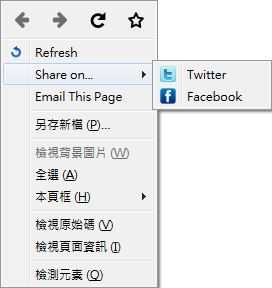
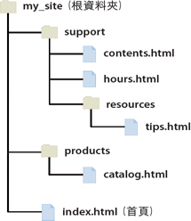

HTML Advanced
2016/03/15
Part I:
HTML5 Tags
HTML5

HTML5
- 2014年完成
- 新標準
- 不設定樣式
- 增加標籤
- 增加元素、屬性
- 提供canvas等功能
- 注意瀏覽器支援程度
語意標籤
- 透過HTML標籤了解內容
- 方便CSS排版
- 協助機械閱讀(搜尋引擎)
HTML5新標籤
- details & summary
- dialog
- mark
- menu & menuitem
- meter
- 多媒體標籤
- 其他
details & summary
- 產生摺疊內容
- summary表示摘要
- Firefox與IE不支援
<details>
<summary>摘要</summary>
其他內容
</details>
摘要
其他內容
dialog
- 顯示對話視窗
- 搭配JS使用
- Firefox與IE不支援
<dialog open>這是個對話窗</dialog>
mark
- 強調文字
- 預設黃底黑字
- IE9以下不支援
<mark>這邊</mark>我用mark標起來
這邊我用mark標起來
menu & menuitem
- 設定右鍵點開的選單
- 搭配JS使用
- 只有Firefox 8.0以上支援

meter
- 顯示進度
- 類似progress標籤
- IE不支援
<progress value="22" max="100"></progress>
<meter value="2" min="0" max="10">2 out of 10</meter><br>
<meter value="0.6">60%</meter>
2 out of 10
60%
Part II:
Attribute
Attribute
<tagname attributename="value"></tagname>
<meta charset="utf-8">
<meter value="2" min="0" max="10">2 out of 10</meter>
<tagname attributename></tagname>
<input type="checkbox" name="vehicle" value="Car" checked>
- 設定該元素額外屬性
- 可以有多個屬性
- 搭配JS控制
常用屬性
- id 設定該元素的唯一名稱
- class 類似id，但可以給多個元素使用
- style 設定CSS樣式
- hidden 隱藏元素
Part III:
Hyperlinks
超連結
<a href="http://s89227.github.io/Exchange/">超連結</a>
<a href="../../index.html">這也是超連結</a>
- a表示超連結
- href為連結目標
- 使用網址或相對路徑
路徑
- 絕對路徑：第一排第二個
- 相對路徑：我的右邊的前面
- 外部網站使用絕對路徑(網址)
- 內部網頁使用相對路徑
相對路徑

- ./ 同層(可省略)
- ../ 上一層
- 資料夾名稱/ 該資料夾下層
target屬性
<a href="../../index.html" target="_blank">超連結</a>
設定開啟連結的方式
| value | 效果 |
|---|---|
| _blank | 在新分頁或視窗開啟 |
| _self | 在這個頁面開啟(預設) |
| _parent | 在母頁面開啟 |
| _top | 在這整個頁面開啟 |
| framename | 在指定的頁框開啟 |
download屬性
<a href="../../index.html" download>超連結</a>
<a href="../../index.html" download="home.html">超連結</a>
- 設定download可下載連結目標
- 可給值時預設下載的檔名